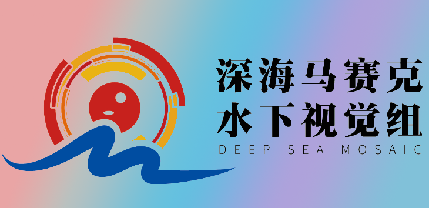

Welcome to Jingchun Zhou (周景春)'s Homepage
2023.06- I am a Visiting Scholar at the Department of Electrical and Electronic Engineering,
The Hong Kong Polytechnic University. |

|
I received an M.S. degree in software engineering from Beijing University of Posts and Telecommunications (BUPT), Beijing, China, in 2016. Subsequently, I earned another M.S. degree in computer information technology from Northern Arizona University (NAU), Flagstaff, AZ, USA, in 2022, and a Ph.D. degree in computer applications from Dalian Maritime University (DMU), Dalian, China, in 2021. At present, I am serving as a postdoctoral researcher at Dalian Maritime University (DMU) and am also a visiting fellow at the Hong Kong Polytechnic University (PolyU), China. I have had the privilege to review for a multitude of journals and conferences including IEEE TIP, TCSVT, TGRS, TIM, SPL, JOE, AI, EAAI, Information Fusion, AMM, CEA, SPIC, Neurocomputing, OE, AAAI, ACCV, and ect.
My primary areas of research interest encompass computer vision, deep learning, and underwater image enhancement.
2023.11: One paper got accepted by Neural Networks, CCF B.
2023.11: One paper was selected as ESI Hot Paper.
2023.10: I am honored to be recognized as the 2023 World top 2% scientists (2023).
2023.09: Three papers were selected as ESI Highly Cited Paper.
2023.09: National Natural Science Foundation of China (No. 62301105) （国自然青年基金）is approved.
2023.08: One paper is published in IJCV.
2023.07: One paper is published in IEEE TGRS.
2023.07: We organize a special issue on Visual Processing Techniques in Harsh Environments in Journal of Visual Communication and Image Representation (JVCIR). (Paper submission deadline: 3 October 2024)
2023.05: We organize a special issue on Applications and Development of Underwater Robotics and Underwater Vision Technology in Journal of Marine Science and Engineering, Remote Sensing, Robotics, Sensors, and Machines. (Paper submission deadline: 31 January 2025)
2023.05: One paper was selected as ESI Highly Cited Paper.
2023.02: One papers was selected as ESI Highly Cited Paper.
2022.11: Two papers were selected as ESI Highly Cited Paper.
2022.09: Three papers were selected as ESI Highly Cited Paper.
Jingchun Zhou, Qian Liu, Qiuping Jiang, Wenqi Ren, Kin-Man Lam*, Weishi Zhang*. International Journal of Computer Vision, 2023, CCF A, IF:19.5, Top3.
Jingchun Zhou, Boshen Li, Dehuan Zhang, Jieyu Yuan, Weishi Zhang*, Zhanchuan Cai*. IEEE Transactions on Geoscience and Remote Sensing, 2023, Vol. 61, CCF B, IF:8.2.
Jingchun Zhou*, Tongyu Yang, Weishen Chu, Weishi Zhang*. Engineering Applications of Artificial Intelligence, 2022, Vol. 111, IF:8.0, ESI Highly Cited Paper.
Jingchun Zhou*, Jiaming Sun, Weishi Zhang*, Zifan Lin. Engineering Applications of Artificial Intelligence, 2023, Vol. 121, IF:8.0, ESI Highly Cited Paper.
Jingchun Zhou*, Zhang Dehuan, Weishi Zhang*. Engineering Applications of Artificial Intelligence, 2023, Vol. 121, IF:8.0, ESI Highly Cited Paper.
Jingchun Zhou, Lei Pang, Dehuan Zhang, Weishi Zhang*. IEEE Journal of Oceanic Engineering, 2023, Vol. 121, No. 2, IF:4.1, ESI Highly Cited Paper, Hot Paper.
Jingchun Zhou*, Dehuan Zhang, Wenqi Ren, Weishi Zhang*. IEEE Geoscience and Remote Sensing Letters, 2022, Vol. 19, ESI Highly Cited Paper.
Jingchun Zhou, Yangyun Wang, Chongyi Li*, Weishi Zhang*. IEEE Journal of Oceanic Engineering, 2023, Vol. 48, No. 4.
Jingchun Zhou*, Dehuan Zhang, Weishi Zhang*. Applied Intelligence, 2022, Vol. 52, ESI Highly Cited Paper.
Jingchun Zhou*, Tongyu Yang, Weishi Zhang*. Applied Intelligence, 2022, Vol. 53, No. 3, ESI Highly Cited Paper.
Jingchun Zhou*, Xiaojing Wei, Jinyu Shi, Weishen Chu, Weishi Zhang*. Computers and Electrical Engineering, 2022, Vol. 100, ESI Highly Cited Paper.
Jingchun Zhou*, Yanyun Wang, Weishi Zhang*. Computers and Electrical Engineering, 2022, Vol. 100, ESI Highly Cited Paper.
Jingchun Zhou, Dehuan Zhang, Weishi Zhang*. Frontiers of Information Technology & Electronic Engineering, 2020, Vol.21, No. 12.
Jingchun Zhou*, Tongyu Yang, Wenqi Ren, Dan Zhang, Weishi Zhang. Optics Express, 2021, vol 29, No. 19.
Jingchun Zhou*, Yanyun Wang, Weishi Zhang*, Chongyi Li. Optics Express, 2021, vol 29, No. 18.
Jingchun Zhou, Xiaojing Wei, Jinyu Shi, Weishen Chu, Yi Lin*. Optics Express, 2022, vol 30, No. 10.
Jingchun Zhou*, Taian Shi, Weishi Zhang*, Weishen Chu. CMES-Computer Modeling in Engineering & Sciences, 2022, vol 131, No. 2.
Jingchun Zhou*, Lei Pang, Weishi Zhang*. Measurement Science and Technology, 2021, vol 32, No. 11.
Jingchun Zhou, Dehuan Zhang, Weishi Zhang*. Multimedia Tools and Applications, 2021, vol 80.
Jingchun Zhou, Zhenzhen Liu, Weidong Zhang, Dehuan Zhang, Weishi Zhang*. Multimedia Tools and Applications, 2020, vol 80.
Jingchun Zhou*, Jian Yao, Weishi Zhang*, Dehuan Zhang. Multimedia Tools and Applications, 2022, vol 81.
Jingchun Zhou, Dehuan Zhang, Peiyu Zou, Weidong Zhang, Weishi Zhang*. IEEE Access, 2019, Vol. 7.
Jingchun Zhou, Dingshuo Liu, Xiong Xie*, Weishi Zhang. Applied Optics, 2022, Vol. 61, No. 10. ESI Highly Cited Paper.
Jingchun Zhou, Mingliang Hao, Dehuan Zhang, Peiyu Zou, Weishi Zhang*. IEEE Photonics Journal, 2019, Vol. 11, No. 6.
Jingchun Zhou, Dehuan Zhang, Weishi Zhang*. Mathematical Problems in Engineering, 2020.
Yi Lin#, Jingchun Zhou*,#, Wenqi Ren, Weishi Zhang*. Computers and Electronics in Agriculture, 2021, Vol. 191.
Lei Pang#, Jingchun Zhou*,#, Weishi Zhang*. Multimedia Tools and Applications, 2023.
Dayi Li#, Jingchun Zhou#,*, Shiyin Wang, Zifan Lin, Weishi Zhang, Taian Shi. Engineering Applications of Artificial Intelligence, 2023, Vol. 123.
Dehuan Zhang#, Jingchun Zhou#,*, Weishi Zhang*, Jian Yao. Expert Systems with Applications, 2023.
Dan Zhang#, Jingchun Zhou#,*, Dehuan Zhang. Signal Processing: Image Communication, 2023, Vol. 117.
Dehuan Zhang#, Chenyu Wu, Jingchun Zhou#,*, Chaolei Li, Weishi Zhang*. Engineering Applications of Artificial Intelligence, 2023, Vol. 125.
Dehuan Zhang#, Chenyu Wu, Jingchun Zhou#,*, Weishi Zhang*, Zifan Lin, Kemal Polat, Fayadh Alenezi. Neural Networks, 2023, CCF C.
Dehuan Zhang#, Wei Cao, Jingchun Zhou#, Yan-Tsung Peng*, Weishi Zhang*, Zifan Lin. Journal of Marine Science and Engineering, 2023, Vol. 11, No. 7.
Ruijie Tian#, Zhang Weishi Zhang*, Fei Wang, Jingchun Zhou#, Adi Alhudhaif, Fayadh Alenezi#. Information Sciences, 2023, Vol. 646.
Dehuan Zhang, Jiaqi Shen, Jingchun Zhou#,*, Erkang Chen, and Weishi Zhang. Optics Express, 2022, Vol. 30, No. 18.
Fei Wang, Wanyu Li, Miao Liu, Jingchun Zhou*, Weishi Zhang. Frontiers of Information Technology & Electronic Engineering, 2023, vol 24.
Fei Wang, Yujie Yang, Jingchun Zhou*, Weishi Zhang. Machines, 2023, Vol. 11, No. 5.
Jingchun Zhou, Dehuan Zhang, Weishi Zhang*. International Journal of Security and Networks (IJSN), 2021, Vol. 16, No. 1.
周景春, 卫晓靖, 史金余*. 电子与信息学报, 2022, Vol. 44, No. 8.
王非, 王欣宇, 周景春*, 刘淼. 电子与信息学报, 2022, Vol. 44, No. 0.
Jingchun Zhou, Dingshuo Liu, Dehuan Zhang, Weishi Zhang*. Asian Conference on Computer Vision. Cham: Springer Nature Switzerland, 2022.
Dingshuo Liu, Jingchun Zhou, Xiong Xie, Zifan Lin, and Yi Lin*. Optics Express, 2022, Vol. 30, No. 16.
Jingchun Zhou, Jiaming Sun, Chongyi Li*, Qiuping Jiang*, Man Zhou, Kin-Man Lam*, Weishi Zhang*, Xianping Fu*. International Journal of Computer Vision, 2023. Major Revise, CCF A, IF: 19.5.
Jingchun Zhou, Qilin Gai, Weishi Zhang*, Kin-Man Lam*, Xianping Fu*. IEEE Transactions on Geoscience and Remote Sensing, 2023. Major Revise, CCF A, IF: 19.5.
Jingchun Zhou#, Zongxin He#, Kin-Man Lam*, Yudong Wang, Weishi Zhang*, ChunLe Guo, Chongyi Li#. arXiv preprint arXiv:2308.11918, Thirty-Eighth AAAI Conference on Artificial Intelligence (AAAI), 2024, Under Revise, CCF A.
Dehuan Zhang#, Jingchun Zhou#, Weishi Zhang*, ChunLe Guo, Chongyi Li. arXiv preprint arXiv:2308.11932, Thirty-Eighth AAAI Conference on Artificial Intelligence (AAAI), 2024, Under Revise, CCF A.
Jingchun Zhou#, Tianyu Liang, Zongxin He, Dehuan Zhang, Weishi Zhang, Xianping Fu, Chongyi Li. IEEE/CVF Computer Vision and Pattern Recognition Conference (CVPR), 2024, Submit, CCF A.
Jingchun Zhou#, Zongxin He, Dehuan Zhang, Kin-man Lam, Weishi Zhang, Xianping Fu, Yi Wang, Chongyi Li. IEEE/CVF Computer Vision and Pattern Recognition Conference (CVPR), 2024, Submit, CCF A.
Jingchun Zhou#, Qilin Gai, Weishi Zhang, Xianping Fu, Kin-man Lam, Ting Li, Chongyi Li. IEEE/CVF Computer Vision and Pattern Recognition Conference (CVPR), 2024, Submit, CCF A.
Zongxin He#, Jingchun Zhou#, Dehuan Zhang, Weishi Zhang, Xianping Fu, Wenqi Ren, Chongyi Li. IEEE/CVF Computer Vision and Pattern Recognition Conference (CVPR), 2024, Submit, CCF A.
Jingchun Zhou, Rui Zhou, Weishi Zhang*, Sam Kwong*, Chongyi Li*. IEEE Transactions on Geoscience and Remote Sensing, 2023.
Dehuan Zhang#, Yakun Guo, Jingchun Zhou#,*, Weishi Zhang*, Zifan Lin, Kemal Polat, Fayadh Alenezi, Adi Alhudhaif. Expert Systems with Applications, 2023.
Fayadh Alenezi, Farman Ali, Jingchun Zhou*, Prayag Tiwari, S¸aban ¨Ozt¨urk. IEEE Journal Of Biomedical And Health Informatics, 2023.
Qian Liu#, Jingchun Zhou#,*, Dehuan Zhang, Weishi Zhang*. Computers and Electronics in Agriculture, 2023.
Jingchun Zhou#, Qian Liu#, Qiuping Jiang*,Chongyi Li, Kin-Man Lam, Weishi Zhang*. Information Fusion, 2023.
Jingchun Zhou#, Shiyin Wang#, Qiuping Jiang*,Chongyi Li, Kin-Man Lam, Weishi Zhang*,Xianping Fu. Computers and Electronics in Agriculture, 2023.
Jingchun Zhou#, Sen Guo#, Qiuping Jiang*,Chongyi Li, Kin-Man Lam, Weishi Zhang*,Xianping Fu. Information Fusion, 2023.
Jingchun Zhou#, Bo Zhang#, Qiuping Jiang*,Chongyi Li, Kin-Man Lam, Weishi Zhang*,Xianping Fu. IEEE Journal of Oceanic Engineering, 2023.